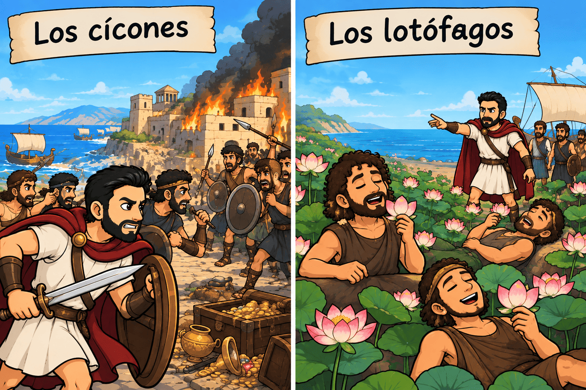
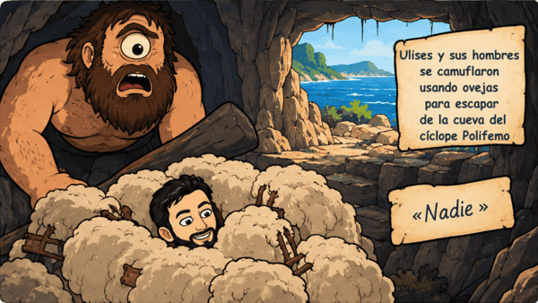
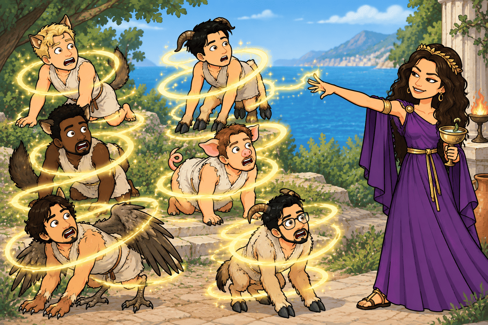
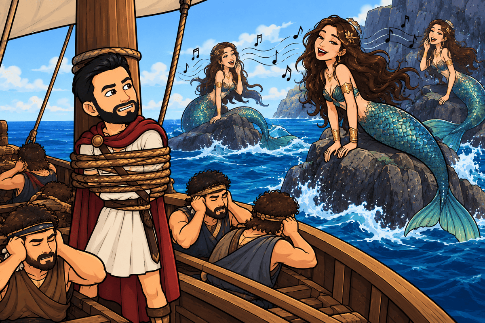
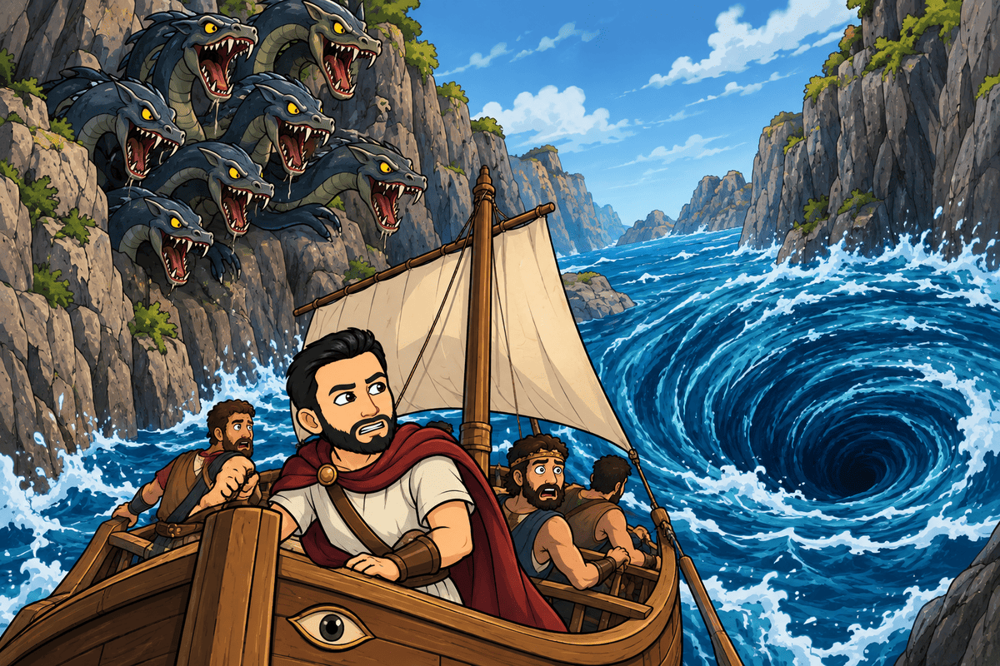
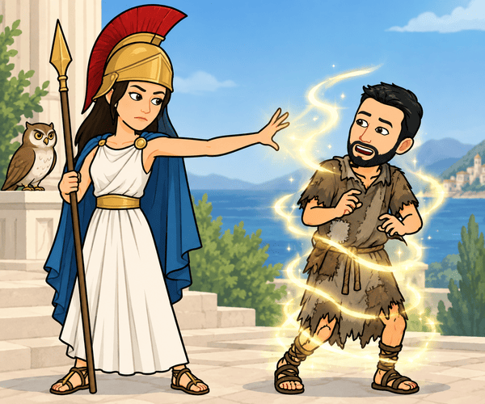
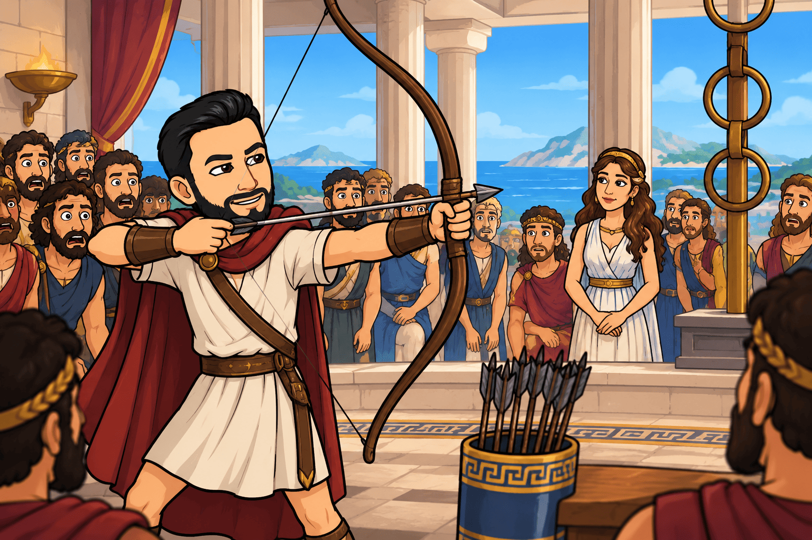

La Odisea matemática de Ulises
El largo viaje de Ulises hacia Ítaca
Después de diez años de guerra en Troya, Ulises (también conocido como Odiseo), rey de Ítaca, consigue finalmente regresar a casa. Sin embargo, su viaje de vuelta durará otros diez años. El camino estará lleno de peligros, pérdidas y aventuras.
Ulises parte de Troya acompañado por sus hombres. Su objetivo parece sencillo: recorrer el mar hasta llegar a Ítaca, donde le esperan su esposa, Penélope, y su hijo, Telémaco. Pero el viaje no será una línea recta. Las tormentas, los dioses y los seres fantásticos harán que la tripulación se desvíe continuamente.
Podemos imaginar que, al comenzar el viaje, Ulises tiene una cantidad determinada de provisiones. Si dispone de comida para 12 hombres durante 30 días, tendría que calcular cuánto duraría si solo quedaran 6 hombres. Como el número de personas y el número de días se relacionan de manera inversa, el producto debe mantenerse constante:
Por tanto:
Las matemáticas pueden ayudar a Ulises a tomar decisiones, pero no siempre serán suficientes para escapar de los peligros.
Los cícones y los lotófagos
La primera parte del viaje lleva a Ulises y sus hombres hasta la tierra de los cícones. Después de un enfrentamiento, consiguen escapar, aunque pierden tiempo y compañeros.
Más tarde llegan a la tierra de los lotófagos, donde algunos hombres comen una planta que provoca el olvido. Ulises tiene que obligarlos a volver al barco para continuar el viaje.
Si cada uno de los marineros llevara, por ejemplo, 4 litros de agua y hubiera 50 hombres, la cantidad total sería:
Pero si una tormenta hiciera que perdieran el 25 % del agua, conservarían:
Ulises tendría que calcular cuidadosamente si esa cantidad sería suficiente para continuar.

La isla de los cíclopes
Después llegan a la tierra de los cíclopes, unos gigantes con un solo ojo. Allí encuentran la cueva de Polifemo, un cíclope enorme que encierra a Ulises y a sus hombres.
Ulises utiliza su inteligencia para escapar. Le dice a Polifemo que se llama «Nadie» y consigue emborracharlo. Después, él y sus compañeros se esconden bajo las ovejas del cíclope.
Cuando Polifemo pide ayuda porque «Nadie» lo está atacando, los demás cíclopes creen que no existe ningún problema.
Ulises ha conseguido resolver un problema que no depende de una fórmula matemática, sino de la lógica.
Sin embargo, cuando ya está en el barco, comete un error: orgulloso de su victoria, revela su verdadero nombre. Polifemo descubre quién lo ha engañado y pide ayuda a su padre, Poseidón, dios del mar.
Desde ese momento, Poseidón se convierte en uno de los principales enemigos de Ulises.

Eolo y los vientos
Ulises llega después a la isla de Eolo, señor de los vientos. Eolo decide ayudarlo y guarda los vientos en un saco, dejando solamente abierto el viento favorable para que el barco pueda avanzar hacia Ítaca.
Cuando están muy cerca de su destino, los compañeros de Ulises abren el saco porque creen que contiene riquezas. Los vientos escapan y los barcos vuelven a alejarse de Ítaca.
Si Ulises hubiera calculado la distancia que faltaba y la velocidad del barco, podría haber estimado el tiempo necesario para llegar. Por ejemplo, si faltaran 600 km y el barco recorriera 50 km al día:
Necesitarían 12 días.
Pero la acción de los vientos cambia completamente el viaje.
Los lestrigones y Circe
Después llegan a la tierra de los lestrigones, gigantes que destruyen casi todos los barcos de Ulises. Solo consigue escapar un barco: el suyo.
Más tarde llegan a la isla de Eea, donde vive la hechicera Circe. Circe transforma a varios de los compañeros de Ulises en animales, pero finalmente acaba ayudándolo.

Durante un año, Ulises permanece en la isla de Circe.
Antes de continuar, Circe le explica que tendrá que viajar hasta el mundo de los muertos para consultar al adivino Tiresias.
Ulises aprende así que no siempre avanzar significa navegar hacia delante: a veces necesita detenerse, buscar información y cambiar de estrategia.
El mundo de los muertos
Ulises llega al mundo de los muertos y habla con Tiresias.
El adivino le explica que todavía le esperan muchos peligros. También le advierte de que sus hombres no deben tocar los rebaños sagrados del dios Helios.
Ulises recibe una información muy importante, pero sus problemas no han terminado.
Las sirenas
De regreso al mar, Ulises sabe que tendrá que pasar cerca de las sirenas, seres que atraen a los marineros con su canto y provocan su perdición.
Ulises quiere escuchar su canto, pero sabe que podría ser peligroso. Por eso ordena a sus hombres que lo aten al mástil del barco y que ellos se tapen los oídos con cera.
Aquí Ulises utiliza una estrategia muy sencilla:
conocer el peligro → calcular las consecuencias → buscar una solución.
Las matemáticas también funcionan de esta manera. No basta con conocer una fórmula: primero hay que comprender el problema.

Escila y Caribdis
Después aparece uno de los momentos más peligrosos del viaje.
Por un lado está Escila, un monstruo de varias cabezas que puede devorar a los marineros.
Por otro está Caribdis, un enorme remolino marino capaz de destruir el barco.
Ulises no puede evitar completamente el peligro. Tiene que elegir la opción que considera menos destructiva.
Esta situación recuerda una idea importante de las matemáticas: no todos los problemas tienen una solución perfecta. A veces debemos comparar diferentes posibilidades y elegir la que produce el mejor resultado.

Trinacia y los rebaños de Helios
Finalmente llegan a Trinacia, una isla donde se encuentran los rebaños sagrados de Helios.
Ulises recuerda la advertencia de Tiresias y ordena a sus hombres que no toquen los animales.
Pero las provisiones se terminan.
Mientras Ulises duerme, sus compañeros sacrifican algunos animales de Helios.
Cuando Ulises vuelve al mar, Zeus castiga a la tripulación. Una tormenta destruye el barco y todos los compañeros de Ulises mueren.
Ulises queda completamente solo.
Ogigia y Calipso
Después del naufragio, Ulises llega a Ogigia, la isla de la ninfa Calipso.
Calipso lo recibe y se enamora de él. Durante siete años Ulises permanece en la isla.
Aunque allí vive con comodidad, Ulises quiere volver a Ítaca.
Finalmente, los dioses deciden que debe marcharse. Calipso lo ayuda a construir una embarcación y Ulises vuelve a hacerse a la mar.
Si pensamos en el tiempo total del viaje, podemos observar que los siete años de Ogigia representan una parte muy importante de los diez años que dura su regreso.
Feacia y Nausícaa
Una tormenta vuelve a destruir la embarcación de Ulises. Después de luchar contra el mar, consigue llegar a Feacia.
Allí lo encuentra Nausícaa, hija del rey Alcínoo.
Los feacios reciben a Ulises como huésped. Durante un banquete, el héroe cuenta todas sus aventuras sin revelar inicialmente su identidad.
Los feacios deciden ayudarlo y preparan un barco para llevarlo finalmente hasta Ítaca.
Si el barco feacio pudiera recorrer 300 km al día y la distancia hasta Ítaca fuera de 900 km, podríamos calcular:
El viaje duraría tres días.
Pero en la historia los feacios llevan a Ulises hasta Ítaca mientras él duerme.
El regreso a Ítaca
Cuando Ulises llega a Ítaca, Atenea lo ayuda a disfrazarse de mendigo. Quiere descubrir quiénes siguen siendo fieles a él.

Mientras tanto, Penélope ha tenido que enfrentarse a numerosos pretendientes que quieren casarse con ella porque creen que Ulises ha muerto.
Penélope ha utilizado durante años una estrategia para retrasar la boda. Dice que elegirá marido cuando termine de tejer una tela. Durante el día teje y durante la noche deshace parte de lo que ha hecho.
Su estrategia permite que el tiempo juegue a su favor.
Finalmente, Ulises se reúne con Telémaco y ambos preparan un plan.
El arco de Ulises
Penélope propone una prueba a los pretendientes.
Se casará con quien consiga tensar el enorme arco de Ulises y disparar una flecha atravesando varios objetos.
Ninguno de los pretendientes lo consigue.
Entonces el mendigo pide probar el arco.
Es Ulises.
Consigue tensarlo y superar la prueba.
A partir de ese momento revela su identidad y, con la ayuda de Telémaco, recupera su casa.
Finalmente, Penélope comprueba que realmente es Ulises recordando un secreto que solamente ambos conocen.
Después de veinte años, Ulises ha regresado a Ítaca.

Las matemáticas del viaje
A lo largo de la aventura, Ulises podría haber necesitado utilizar muchas herramientas matemáticas:
- Los conjuntos numéricos, para clasificar las cantidades que aparecen durante su viaje.
- Las potencias, para expresar crecimientos repetidos.
- Las raíces, para calcular longitudes y distancias.
- La proporcionalidad directa, para relacionar, por ejemplo, distancia y consumo cuando este sea constante.
- La proporcionalidad inversa, para estudiar situaciones en las que al aumentar una cantidad disminuye otra.
- La regla de tres compuesta, cuando intervienen varias magnitudes a la vez.
- Los porcentajes, para calcular pérdidas, aumentos y disminuciones.
- El interés simple y compuesto, para estudiar cómo podría crecer un tesoro con el paso del tiempo.
Ulises descubre durante su viaje algo que también descubrirás tú:
Resolver un problema no consiste solamente en hacer operaciones. Primero hay que comprender la situación, decidir qué información necesitamos y elegir la herramienta adecuada.
Preguntas de comprensión lectora
- ¿Cuánto tiempo duró la guerra de Troya y cuánto tiempo aproximadamente duró el regreso de Ulises a Ítaca?
- ¿Por qué Poseidón se convierte en enemigo de Ulises?
- ¿Cómo consigue Ulises escapar de la cueva de Polifemo?
- ¿Qué sucede cuando los compañeros de Ulises abren el saco de los vientos que les había entregado Eolo?
- ¿Por qué Circe recomienda a Ulises visitar el mundo de los muertos?
- ¿Qué estrategia utiliza Ulises para poder escuchar el canto de las sirenas sin morir?
- ¿Qué diferencia existe entre el peligro de Escila y el de Caribdis?
- ¿Por qué Zeus destruye el barco de Ulises en Trinacia?
- ¿Quién encuentra a Ulises cuando llega a Feacia y cómo consigue finalmente regresar a Ítaca?
- ¿Qué prueba propone Penélope a los pretendientes y cómo demuestra Ulises finalmente su identidad?
La mujer en la Grecia clásica y en La Odisea
Cuando estudiamos la Grecia clásica es importante recordar que no existía una única forma de ser mujer en toda Grecia. Las condiciones podían cambiar según la ciudad, la época, la familia y la posición social. Atenas y Esparta, por ejemplo, tenían algunas diferencias importantes.
En muchas sociedades griegas, especialmente en Atenas, las mujeres tenían menos derechos políticos y sociales que los hombres. No podían participar directamente en la política ni ocupar los mismos espacios públicos que los ciudadanos varones. Su vida estaba relacionada principalmente con la familia y el hogar, aunque esto no significa que todas las mujeres vivieran exactamente de la misma manera.
En general, las mujeres podían tener responsabilidades importantes dentro de la casa. Organizaban parte de la vida familiar, cuidaban de los hijos y podían controlar determinadas tareas económicas del hogar. Sin embargo, tenían menos libertad y poder político que los hombres.
Es importante diferenciar entre cómo era la vida de las mujeres reales y cómo aparecen las mujeres en los mitos. Las historias mitológicas presentan diosas y heroínas con poderes extraordinarios, pero eso no significa que las mujeres de la sociedad griega disfrutaran de esos mismos poderes o derechos.
Las diosas griegas
La mitología griega está llena de mujeres con características muy diferentes.
Atenea es la diosa de la sabiduría y de la estrategia. En La Odisea protege a Ulises y lo ayuda a tomar decisiones. Es especialmente interesante porque representa la inteligencia y la capacidad de utilizar la estrategia para resolver problemas.
Hera es la esposa de Zeus y una de las principales diosas del Olimpo. Está relacionada con el matrimonio y la familia.
Artemisa es la diosa de la caza y de la naturaleza. Aparece como una figura independiente y poderosa.
Afrodita representa el amor y el deseo. Su poder no está relacionado con la fuerza física, sino con su capacidad para influir en dioses y seres humanos.
Deméter está relacionada con la agricultura y la fertilidad de la tierra.
Hestia, por su parte, representa el hogar y el fuego doméstico.
Estas diosas muestran que la mitología griega podía imaginar a mujeres con poder, inteligencia, autoridad y capacidad de decisión. Sin embargo, debemos recordar que eran personajes religiosos y mitológicos, no un reflejo directo de la situación de las mujeres reales.

Las mujeres de La Odisea
En La Odisea encontramos varios personajes femeninos que desempeñan papeles importantes. No todas tienen el mismo carácter ni el mismo poder.
Penélope
Penélope es la esposa de Ulises.
Durante los veinte años de ausencia de su marido tiene que enfrentarse a una situación muy difícil. Muchos pretendientes quieren casarse con ella porque creen que Ulises ha muerto.
Penélope utiliza su inteligencia para retrasar la decisión. Dice que elegirá marido cuando termine de tejer una tela para Laertes, el padre de Ulises. Sin embargo, durante la noche deshace parte del trabajo que ha realizado durante el día.
La historia de Penélope muestra que la inteligencia no siempre consiste en tener fuerza o autoridad. También puede consistir en saber esperar, diseñar estrategias y encontrar soluciones ante situaciones difíciles.
Además, Penélope no acepta inmediatamente lo que los demás quieren imponerle. Busca tiempo para tomar sus propias decisiones.
Atenea
Atenea es una diosa, pero también tiene un papel fundamental en la historia.
Ayuda a Ulises durante su regreso y utiliza la inteligencia y la estrategia para protegerlo.
Es especialmente interesante desde el punto de vista de la igualdad porque representa una cualidad que tradicionalmente se ha relacionado muchas veces con los personajes masculinos: la capacidad para dirigir, planificar y tomar decisiones.
Atenea demuestra que la inteligencia y la estrategia no pertenecen a un sexo determinado.
Circe
Circe es una hechicera que vive en la isla de Eea.
Al principio se enfrenta a Ulises y transforma a algunos de sus compañeros en animales. Sin embargo, después se convierte en una de las personas que más información proporciona al héroe.
Circe conoce el mundo que rodea a Ulises y sabe qué peligros tendrá que afrontar.
No aparece simplemente como «la mujer que ayuda al héroe»: es un personaje con poder, conocimientos y capacidad para actuar por sí misma.
Calipso
Calipso vive en Ogigia.
Cuando Ulises llega a su isla después del naufragio, ella lo acoge y permanece con él durante siete años.
Calipso es un personaje poderoso. Tiene la capacidad de decidir sobre la vida de Ulises y puede ofrecerle una vida cómoda e incluso la posibilidad de permanecer con ella.
Sin embargo, existe un conflicto importante: Ulises quiere regresar a su hogar.
Esto permite plantear una cuestión interesante:
Si una persona puede ofrecerte una vida aparentemente perfecta, ¿significa eso que tiene derecho a decidir por ti?
La respuesta nos lleva a una idea fundamental para trabajar la igualdad:
todas las personas deben poder tomar decisiones sobre su propia vida.
Nausícaa
Nausícaa es la hija del rey Alcínoo de Feacia.
Es ella quien encuentra a Ulises después del naufragio y decide ayudarlo.
Nausícaa representa otro tipo de personaje femenino: una joven que actúa con valentía y responsabilidad ante una situación inesperada.
Su comportamiento es fundamental para que Ulises pueda continuar su viaje.
Arete
Arete es la reina de los feacios y esposa de Alcínoo.
Cuando Ulises llega a Feacia, su opinión es importante para decidir cómo debe ser tratado el extranjero.
Esto resulta significativo porque, aunque la sociedad griega estaba organizada en gran medida alrededor del poder masculino, la literatura podía representar mujeres con autoridad e influencia.

¿Eran iguales hombres y mujeres en la Grecia clásica?
La respuesta es no, al menos si hablamos de los derechos sociales y políticos de muchas de las sociedades griegas de la época.
Pero tampoco podemos decir simplemente que «las mujeres no tenían ningún poder».
La realidad era más compleja.
Las mujeres podían tener responsabilidades dentro de sus familias, participar en determinadas actividades religiosas y, dependiendo del lugar y de su posición social, disponer de diferentes grados de autonomía.
Además, los mitos presentaban personajes femeninos muy poderosos.
Por eso es importante distinguir entre tres cosas:
1. Las mujeres reales de la Grecia clásica.
Tenían unas condiciones sociales y unos derechos que dependían de la ciudad y de su situación.
2. Las diosas.
Eran personajes mitológicos con poderes extraordinarios.
3. Las mujeres de las historias.
Personajes como Penélope, Atenea, Circe, Calipso, Nausícaa y Arete podían tener inteligencia, poder, conocimientos y capacidad para tomar decisiones.
Una mirada actual sobre La Odisea
Leer La Odisea hoy no significa aceptar todo lo que aparece en ella como un modelo de sociedad.
Podemos leerla también para hacer preguntas.
Por ejemplo:
- ¿Por qué Ulises tiene tanta libertad para viajar mientras Penélope debe permanecer en Ítaca?
- ¿Por qué los pretendientes consideran que pueden decidir con quién debe casarse Penélope?
- ¿Qué diferencias existen entre el poder de Atenea y el de los hombres que gobiernan?
- ¿Por qué Circe y Calipso son representadas como mujeres con poderes extraordinarios?
- ¿Qué decisiones toman Nausícaa y Arete?
- ¿Qué cualidades de estos personajes siguen siendo importantes en la sociedad actual?
- ¿Qué situaciones de la obra consideraríamos injustas desde nuestra perspectiva actual?
Estas preguntas nos permiten comprender que estudiar una obra antigua no consiste solamente en saber qué ocurrió, sino también en reflexionar sobre cómo era aquella sociedad y cómo ha cambiado la nuestra.
La igualdad no significa que hombres y mujeres tengan que ser iguales en personalidad o capacidades. Significa que ninguna persona debe tener menos derechos, oportunidades o libertad por el hecho de ser hombre o mujer.
Y quizá esta sea una de las mejores preguntas que podemos llevarnos de Ítaca:
Si Atenea, Penélope, Circe, Calipso, Nausícaa y Arete hubieran tenido las mismas oportunidades que los hombres de su época, ¿qué otras historias podríamos haber leído sobre ellas?